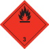

Transport von Gefahrgütern in kleinen Mengen |
| 6 Stück 11-kg-Flaschen = ca. 66 kg x 3 = 198 120 kg Voranstrich = ca. 120 l x 3 = 360 |
| Summe = 558 < 1.000 Punkte, also Kleinmengenbeförderung zulässig! |
| 40 l Sauerstoff (Klasse 2, UN 1072) x 1 = 40 8 kg Acetylen (Klasse 2, UN 1001) x 3 = 24 33 kg Propan (Klasse 2, UN 1965) x 3 = 99 180 l Diesel (Klasse 3, UN 1202) x 1 = 180 |
| Summe = 343 < 1.000 Punkte, also Kleinmengenbeförderung zulässig! |

Tabelle 1: Höchstmengen und Faktoren für Kleinmengentransporte
Zur Ermittlung der richtigen Faktoren werden die UN-Nummer und die Verpackungsgruppe des Gefahrgutes benötigt. Diese Angaben können z.B. dem Abschnitt 14 des Sicherheitsdatenblattes entnommen werden.
| Stoffe/Zubereitungen | Höchstmengen (Faktoren) | Gefahrzettel | |||||
| Klasse | UN-Nr. | Bezeichnung (gegebenenfalls mit Angabe der Verpackungsgruppe) |
20 50 |
333 3 |
1.000 1 |
unbe- grenzt |
|
| 1 Explosive Stoffe (z. B. Sprengstoffe, Munition) |
0014 | Patronen für Werkzeuge, ohne Geschoss | ● | ||||
| 0030 | Sprengkapsel elektrisch (Zünder) | ● | |||||
| 0065 | Sprengschnur | ● | |||||
| 0323 | Kartuschen für technische Zwecke | ● | |||||
| 2 Gase (z. B. Flüssiggas, Acetylen, Sauerstoff, Spraydosen) |
1001 | Acetylen, gelöst | ● | ||||
| 1072 | Sauerstoff verdichtet | ● | |||||
| 1965 | Kohlenwasserstoffgas, Gemisch, verflüssigt, N.A.G. Gemisch C (Propan), | ● | |||||
| 1950 | Druckgaspackungen (Treibgas z. B. Kohlendioxid) | ● | |||||
| 1950 | Druckgaspackungen (feuergefährlich) | ● | |||||
| 3 Entzündbare flüssige Stoffe (z. B. Benzin, Diesel, brennbare Lacke |
1133 | Klebstoff (Verpackungsgruppe II) | ● | ||||
| 1133 | Klebstoff (Verpackungsgruppe III) | ● | |||||
| 1202 | Dieselkraftstoff | ● | |||||
| 1203 | Benzin | ● | |||||
| 1263 | Farbe (Verpackungsgruppe II) | ● | |||||
| 1263 | Farbe (Verpackungsgruppe III) | ● | |||||
| 1306 | Holzschutzmittel | ● | |||||
| 4.1 Entzündbare feste Stoffe |
3175 | Feste Stoffe, die entzündliche flüssige Stoffe enthalten, N.A.G. (lösemittelhaltige Putzlappen) | ● | ||||
| 5.2 Organische Peroxide (z. B. Härter für Styrol) |
3106 | Organisches Peroxid Typ D, fest | ● | ||||
| 6.1 Giftige Stoffe (Schädlings- bekämpfungsmittel) |
2810 | Giftiger organischer flüssiger Stoff, N.A.G. | ● | ||||
| 2902 | Pestizid, flüssig, giftig, N.A.G. | ● | |||||
| 2927 | Giftiger organischer flüssiger Stoff, ätzend, N.A.G. | ● | |||||
| 3287 | Giftiger anorganischer flüssiger Stoff, N.A.G. | ● | |||||
| 8 Ätzende Stoffe (z. B. saure oder alkalische Reiniger, Epoxidharzhärter) |
1760 | Ätzender flüssiger Stoff, N.A.G. (Verp.-Gruppe II) | ● | ||||
| 1760 | Ätzender flüssiger Stoff, N.A.G. (Verp.-Gruppe III) | ● | |||||
| 1824 | Natriumhydroxidlösung (Verpackungsgruppe II) | ● | |||||
| 1824 | Natriumhydroxidlösung (Verpackungsgruppe III) | ● | |||||
| 2289 | Isophorondiamin | ● | |||||
| 9 Verschiedene Stoffe (z. B. umweltge- fährdende Stoffe, Lithiumbatterien) |
3077 | Umweltgefährdender Stoff fest, N.A.G | ● | ||||
| 3082 | Umweltgefährdender Stoff, flüssig, N.A.G. | ● | |||||
| 3480 | Lithium-Ionen-Batterien | ● | |||||
| 3481 | Lithium-Ionen-Batterien in Ausrüstungen | ● | |||||
Straßenverkehrsordnung (StVO)
Straßenverkehrs-Zulassungs-Ordnung (StVZO)
Gefahrgutverordnung Straße, Eisenbahn und Binnenschifffahrt (GGVSEB)
Gefahrgut-Ausnahmeverordnung (GGAV)
Gefahrgutmodul des Programms WINGISonline
07/2021